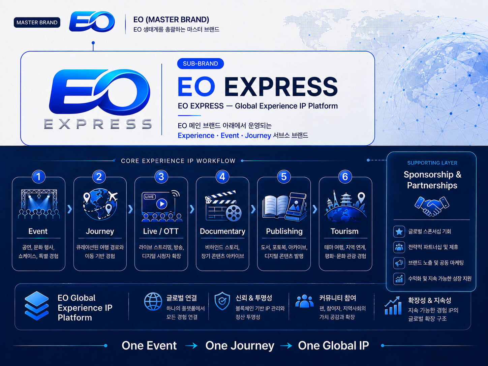

Experience & Access Utility
PUBLIC RELEASEExperience & Access Utility
EO Token의 차별화된 초기 유틸리티 중 하나는 공연·방송·이벤트의 특별한 접근권입니다. 쇼핑몰 결제와 별도로, 일반 결제로는 얻기 어려운 한정 경험과 참여 기회를 EO Token과 연계합니다.
Core Models
| 모델 | 설명 |
|---|---|
| 기본 응모 | 이벤트별 EO 보유 조건을 충족한 사용자에게 기본 응모 기회 제공 가능 |
| 추가 응모 | 추가 응모에 EO Token 사용. 사용된 EO는 당첨 여부와 관계없이 반환되지 않음 |
| EO 특별석 | 행사별로 EO 전액 결제, EO 응모 등 적합한 방식 선택 |
| 프리미엄 경험 | 아티스트 연계 특별 관람환경, 방송 방청, 한정 프로그램 등 |
고정된 Basic/Silver/Gold 등급제를 현재 도입하지 않고, 콘서트·방송·이벤트별로 보유조건·응모수량·EO 사용조건을 별도로 설계합니다.
Event Token Flow
유료 응모에 사용된 EO Token은 운영정책에 따라 Treasury 귀속, 생태계 재순환 또는 일부 소각의 대상이 될 수 있습니다. 세부 배분 기준과 정기 소각 프로그램은 실사용 데이터가 충분히 축적된 이후 사전 공지를 거쳐 도입합니다.
EO Express — Global Experience IP Platform
EO Express는 단일 공연을 일회성 이벤트로 끝내지 않고, 공연 전·중·후의 이동·현장기록·라이브 유통·다큐멘터리·출판·관광을 하나의 장기 IP 가치사슬로 연결하는 복합 Experience IP 플랫폼 개념입니다. “One Event → One Journey → One Global IP”를 핵심 비전으로 하며, 특정 아티스트, 공연일, 노선, 방송·OTT 사업자 또는 계약은 공식 합의가 확인되기 전까지 확정 사실로 표시하지 않습니다.

도표 10. EO EXPRESS Global Experience IP Platform
One Event → One Journey → One Global IP
EO Express의 핵심은 공연 자체보다 공연을 둘러싼 전체 과정을 콘텐츠·경험·관광 IP로 전환하는 데 있습니다. 개념적 확장 모델은 이벤트, 큐레이션 이동, 현장기록, Live/OTT, 다큐멘터리, 출판, 관광을 단계적으로 연결합니다. 각 단계의 실제 실행은 권리 확보, 파트너 계약, 현지 규제 및 운영 조건 충족을 전제로 합니다.
| 단계 | 백서상 역할 | 사업 연결 |
|---|---|---|
| EVENT | 공연·문화행사·특별 경험을 원천 IP로 기획 | Experience & Access Utility |
| JOURNEY | 이동·인터뷰·현장 촬영을 포함한 여정 자체를 콘텐츠화 | EO Express / 관광 준비 |
| LIVE / OTT | 온라인 라이브, 방송, 글로벌 디지털 유통으로 관객 확장 | Global Content IP |
| DOCUMENTARY | 공연과 여정의 기록을 장편·후속 콘텐츠로 확장 | Media & Data / Documentary |
| PUBLISHING | 도서·사진집·디지털 아카이브 등 장기 소장형 IP | Content & Intelligence |
| TOURISM | 공연·콘텐츠와 연계된 테마 관광 및 장기 철도관광으로 확장 | Peace Tourism Belt |
Six IP Portfolio Axes
EO Express는 하나의 이벤트에서 OTT 중계권, Online Live, Documentary, Publishing, Tourism, Sponsorship 등 복수의 사업·IP 축으로 확장될 수 있는 구조를 지향합니다. 각 축은 확정 매출원이 아니라 권리 확보·파트너 계약·규제 검토 이후 선택적으로 실행할 수 있는 포트폴리오입니다.
| IP 축 | 공개 백서 반영 방식 |
|---|---|
| OTT / Broadcast | 공연 또는 콘텐츠의 글로벌 유통권·중계권 협력 가능성 |
| Online Live | 온라인 공연·실시간 디지털 관객 확장 |
| Documentary | 공연·여정·비하인드 스토리의 장기 콘텐츠화 |
| Publishing | 도서·사진집·디지털 기록·아카이브 |
| Tourism | EO Express 및 Peace Tourism Belt와 연결되는 테마 관광 |
| Sponsorship | 글로벌·국내 브랜드와의 행사·콘텐츠 협찬 가능성 |
Gate-Based Execution
EO Express의 실제 실행은 공연 또는 문화행사의 공식 승인, 국제제재 검토, 아티스트·권리자 협상, 콘텐츠 유통권 확보, 철도·교통의 안전·보험·출입국 조건 등 선행 Gate를 충족하는 경우에만 진행합니다. 특정 아티스트나 특정 시점을 백서상 확정 파트너·일정으로 표기하지 않습니다.
EO Token Connection
향후 EO Token은 EO Express 관련 특별석, 이벤트 응모, 한정 프로그램, 콘텐츠 접근 및 관광·경험형 서비스에 연결될 수 있습니다. 이 연결은 기존 Experience & Access Utility 원칙 안에서 설계하며, 실제 사용조건은 개별 행사와 서비스 출시 전에 공개합니다.